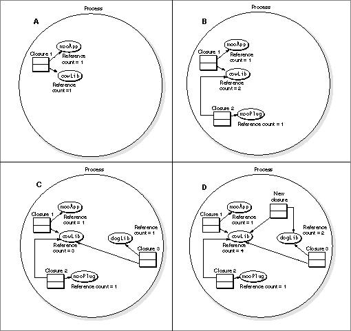
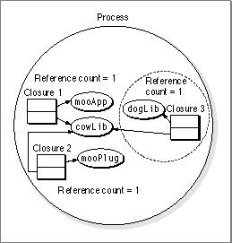
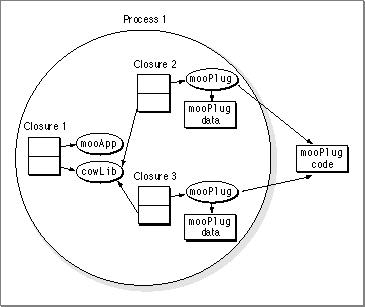

Using Code Fragment Manager Options
If you prepare and release fragments explicitly from your code, you should be aware of the different options available. These options are available (as theCFragLoadOptionsparameter) for the following Code Fragment Manager routines:If you are calling one of these Code Fragment Manager routines to prepare a plug-in, you should generally specify the
GetSharedLibraryGetDiskFragmentGetMemFragmentkReferenceCFragoption when invoking it. The Code Fragment Manager then prepares the fragment (and any required import libraries) if a connection is not already present, adds a new closure, and increments the reference count of any import libraries that the new closure shares with others already in memory. The Code Fragment Manager then returns a closure ID which you can use to access the symbols in the closure.You can also use the
- IMPORTANT
- Code Fragment Manager routines that do not create a new closure return a connection ID rather than a closure ID. The Code Fragment Manager increments reference counts on existing connections only when a new closure is created.
kReferenceCFragoption to gain access to symbols in an already instantiated connection. For example, say you have an applicationmooAppas shown in Figure 1-5 A. The applicationmooAppprepares the plug-inmooPlugas shown in B, andmooPlugsometime later programmatically prepares the shared librarydogLib(shown in C). If you wanted to access the symbols indogLibfrommooApp, you could do so by calling the Code Fragment Manager to preparedogLibusing thekReferenceCFragoption. The Code Fragment Manager adds a new closure and increases reference counts to reflect the presence of the new closure. Figure 1-5 D shows the effect of usingkReferenceCFragto prepare the shared librarydogLib, which requires the librarycowLib.Figure 1-5 Using
- Note
kReferenceCFragwas previously calledkLoadCFrag.kReferenceCFrag
In some cases you may only want to determine if a connection associated with a fragment exists. In such cases, you can use the
kFindCFragoption to return a connection ID of an existing connection. However, using thekFindCFragoption does not add a closure or increase the connection's reference count. You can theoretically access the symbols it contains, but if the reference count drops to 0, the Code Fragment Manager might release the connection while your program is still using it. For example, in Figure 1-6, say thatmooAppprepares the plug-inmooPlug, andmooPlugprogrammatically prepares the shared librarydogLib. Later,mooAppuseskFindCFragto access symbols indogLib. IfmooPlugreleasesdogLib, then any references to symbols indogLibare left dangling.
Another useful option is
kPrivateCFragCopy. Using thekPrivateCFragCopyoption when calling a Code Fragment Manager routine, you can create a new connection for each request to prepare the fragment, even if the same application makes multiple preparation requests. That is, you can have multiple connections (each with its own private data section) from the same shared library that all serve the same client fragment. Such a connection is called a private connection. A fragment prepared in this manner, however, is not visible as an import library (that is, the Code Fragment Manager does not recognize its name as an import library and you cannot find it using theGetSharedLibraryroutine or thekFindCFragoption.)For example, the application
- Note
- A private connection is also known as a per-load instantiation.
mooAppin Figure 1-7 has created two "copies" of the plug-inmooPlug. Each instance ofmooPlughas its own data, but they all share the same code. Note thatcowLibis not duplicated for each instance ofmooPlug; any import libraries that are part of a private connection's closure are treated normally.Figure 1-7 Using private connections

You can specify a private connection, for example, if you have a communications application that uses a shared library to implement a tool for connecting to a serial port. By requesting private connections, you can ensure that your tool can connect to two or more serial ports simultaneously by maintaining separate copies of the tool's data. The tool itself can then be ignorant of how many ports it is handling.